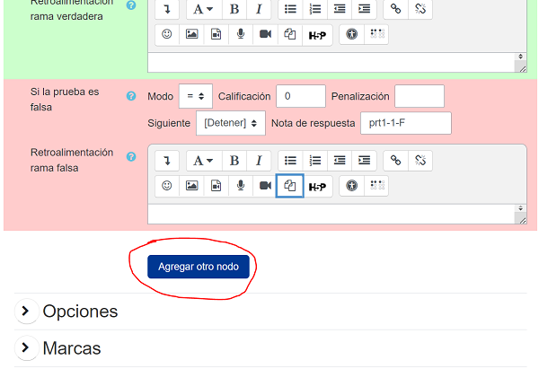

Autoría inicio rápido 3: mejorar la retroalimentación
1 - Primera pregunta | 2 - Variables de pregunta | 3 - Retroalimentación | 4 - Aleatorización | 5 - Test de preguntas | 6 - Preguntas de varias partes | 7 - Simplificación | 8 - Cuestionarios
Esta parte de la Guía Autoría inicio rápido trata de la mejora de la retroalimentación. El siguiente vídeo explica el proceso:
Introducción
En la última parte empezamos a trabajar con variables de pregunta. En concreto, definimos la variable exp para la expresión a integrar, y ta para la respuesta del profesor. Luego pedimos al alumno que hallara .
Prueba a previsualizar esta pregunta y escribe -1*(x-1)^(-3)+c. El sistema debería aceptarlo como correcto. A continuación, escribe -1*(x-1)^(-3)+C. Se comparará con la respuesta del profesor -1*(x-1)^(-3)+c por equivalencia algebraica (recuerde que especificamos AlgEquiv en el árbol de respuestas potenciales), y no se aceptará como equivalente. La razón es que "c" y "C" son diferentes. A un profesor razonable probablemente no le importará qué letra se utiliza para la constante de integración. Solucionemos este problema.
Test de respuestas: Int
Tendremos que editar el árbol de respuestas potenciales para utilizar una mejor prueba de respuesta. Vuelva a la página "Editar una pregunta STACK". Busque la configuración de su árbol de respuesta potencial, haga clic en el menú desplegable donde seleccionamos AlgEquiv y seleccione Int de la lista. Escriba x (la variable) en la opción Opciones de prueba. Ahora pulse el botón [Guardar cambios y continuar editando] y una vez más pulse el botón vista previa. Acabamos de seleccionar un test de respuesta especial para tratar las preguntas de integración.
La prueba de respuesta Int aceptará cualquier nombre de variable para la constante de integración. Por ejemplo, intente escribir -(x-1)^(-3)+k. El sistema debería aceptarlo como correcto. También dará una respuesta estándar si el estudiante olvida una constante de integración o accidentalmente diferencia en su lugar. Para probarlo, escriba -12*(x-1)^(-5). Si no desea que los estudiantes vean la respuesta automática, seleccione la opción Silencio en el nodo de respuesta potencial.
La Nota de respuesta de un resultado es un nombre dado a ese resultado específico. STACK las generará automáticamente con información sobre el árbol de respuesta potencial, el número de nodo y el resultado del nodo.
Consideraciones
Al comprobar la respuesta de un alumno con STACK, un profesor debe preguntarse "¿Cuáles son las propiedades matemáticas que hacen que la respuesta de un alumno sea correcta/incorrecta?" En nuestro caso, estas preguntas incluyen:
- ¿Es la respuesta del alumno una antiderivada simbólica del integrando?
- ¿Tiene el alumno una constante de integración de forma adecuada?
El test de respuesta int incorporado responde a estas preguntas, por lo que un profesor no tiene que escribir código para hacerlo en cada pregunta de integración.
A continuación, el profesor debe preguntarse: "¿Qué podría hacer un alumno de forma incorrecta y qué le daría esto como respuesta? La respuesta puede venir de la experiencia o de las preguntas de diagnóstico. Suele ser sensato revisar las respuestas de los alumnos a las preguntas STACK al cabo de un año e incorporar una mejor retroalimentación a la luz de las experiencias.
Mejorar aún más la retroalimentación
Para cada error que pensemos que pueden cometer los alumnos, podemos crear una prueba de respuesta. Por ejemplo, podemos esperar que los alumnos dejen su respuesta en forma expandida. Por supuesto, ésta seguiría siendo una respuesta correcta, pero queremos evitar que los alumnos amplíen innecesariamente su respuesta. Creemos otro nodo que compruebe si el alumno ha dejado su respuesta final en forma factorizada. Hacemos esto añadiendo otro nodo de respuesta potencial.

Vaya al árbol de respuestas potenciales y pulse [Agregar otro nodo] . A continuación, en la rama True del Nodo 1, cambie en el campo Siguiente por Nodo 2. Si entramos en el Nodo 2, sabemos que el alumno tiene la respuesta correcta y sólo necesitamos establecer si está factorizada o no. Para establecer esto necesitamos usar el FacForm answer test. Este test comprueba que SAns y TAns son equivalentes y que SAns está factorizado. En este caso ya sabemos que la respuesta del alumno es equivalente a la respuesta del profesor (usando el algoritmo mejor adaptado de Int). Por lo tanto, podemos comprobar la respuesta del alumno contra sí misma.
Actualiza el formulario para que el Nodo 2 tenga
Prueba = FacForm
SAns = strip_int_const(ans1,x)
TAns = strip_int_const(ans1,x)
Opciones = x
STACK proporciona una función strip_int_const para eliminar cualquier constante de integración que el alumno haya podido utilizar. De nuevo tenemos que especificar la variable en Opciones.
Asegúrese de que los resultados de Verdadero y Falso no cambian la puntuación. Por defecto se establecerán en +0 y -0, respectivamente. Al no cambiar la puntuación, nos aseguramos de que los estudiantes no son penalizados por dar su respuesta en forma expandida.
FacForm da feedback automático, pero si quieres escribir el tuyo propio puedes poner Silencio en Sí y escribir algo como lo siguiente en Retroalimentación rama falsa:
Tu respuesta no está factorizada. Bien hecho por obtener la respuesta correcta, pero recuerda que no es necesario ampliar los paréntesis.
Puede seguir ampliando su posible árbol de respuestas, comprobando tantos errores comunes como desee. Consulte la documentación para obtener información sobre más pruebas de respuesta.
Añadir un comentario general
La Retroalimentación general se muestra a todos los estudiantes, independientemente de si han acertado o no la pregunta. Este es un buen lugar para añadir una solución completa.
Próximo paso
Ahora debería poder crear comentarios específicos en STACK.